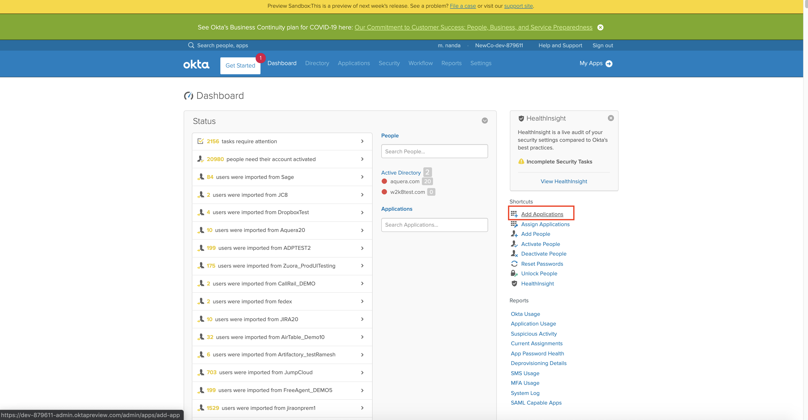
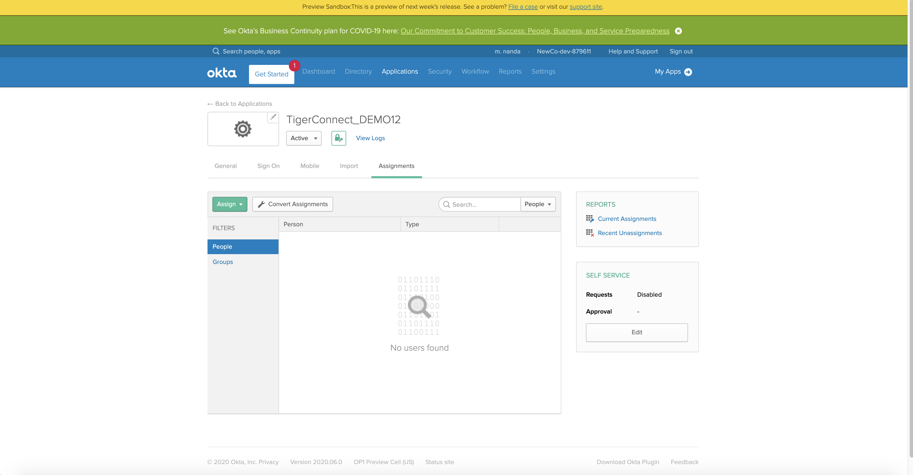
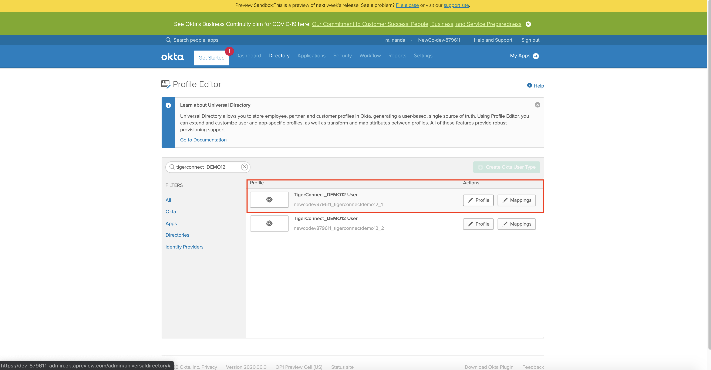
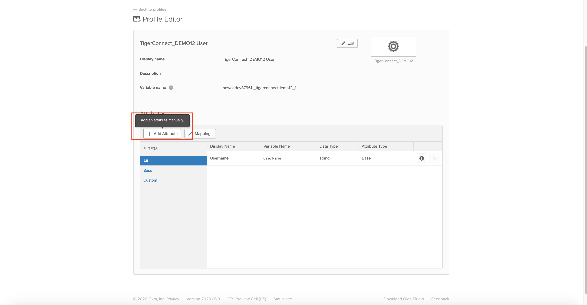
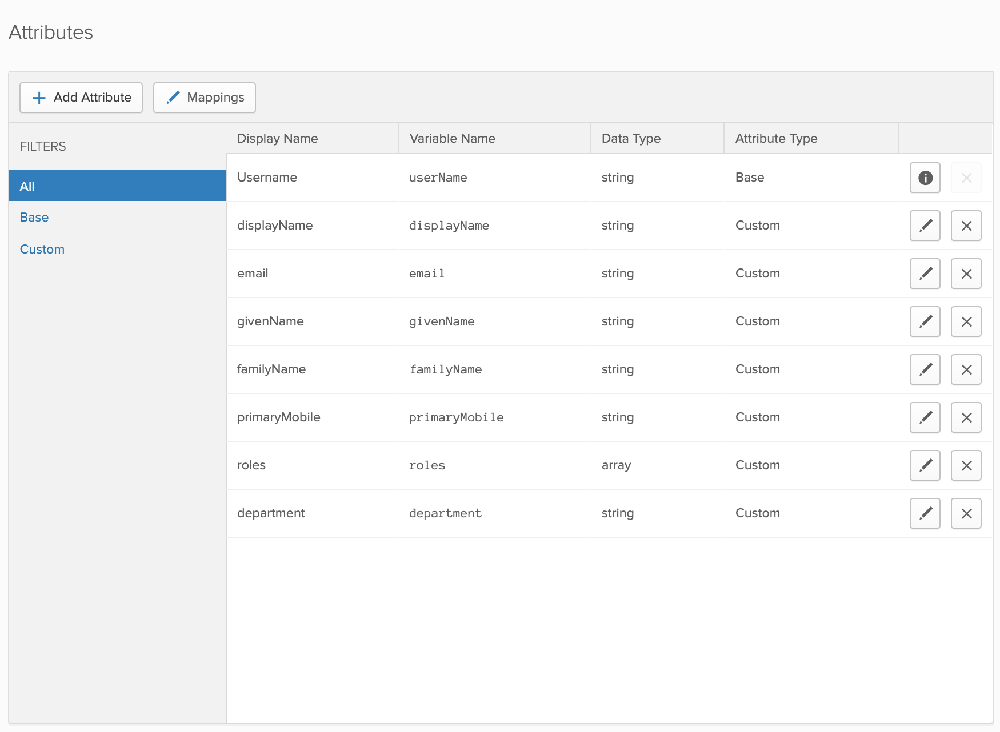
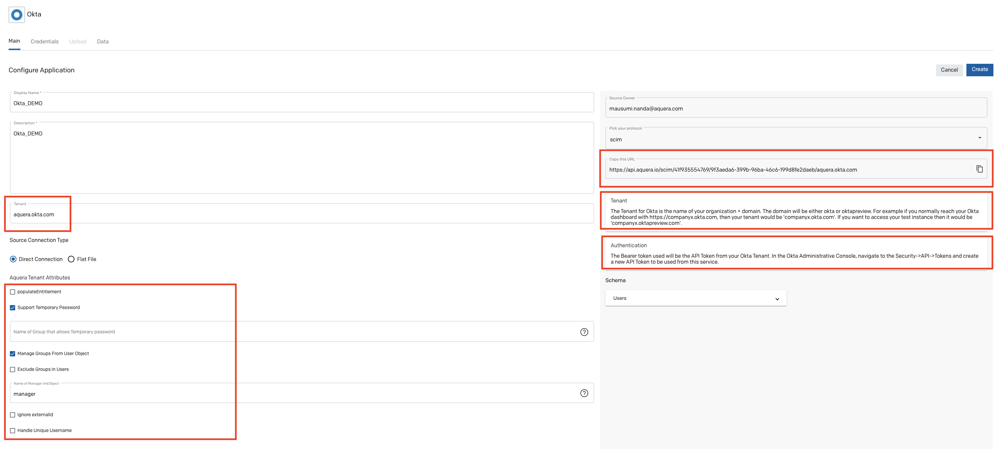
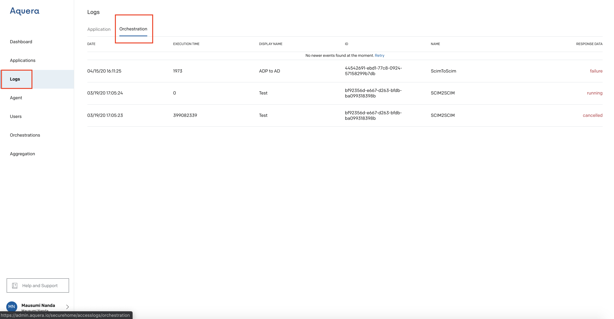

Provisioning TigerConnect from Okta
Jump To
1. Create a Custom App in Okta
a. Create a New Application Integration
2. Aquera Admin UI: Source Configuration (Okta)
3. Aquera Addmin UI: Target Configuration (TigerConnect)
4. Orchestration
Create a Custom App in Okta
Login to Okta using your credentials
Goto Admin

Goto Add Applications

Click on Create a New App

Create a New Application Integration
The Platform is Web
The Sign-In Method is Secure Web Authentication (SWA)

Then Click on Create
Enter an App Name (TigerConnect_DEMO12) and App Login Page URL
Then Click Finish

You get the following screen

Goto Directory -> Profile Editor

Search the TigerConnect_DEMO12 Custom app that you just Created

Then Goto Profile
Click on Add Attribute

Then Add a Custom Value (displayName)
Enter the values as stated in the below screenshot

Then Save and Add Another
To Add Another Custom Value (Roles)
Enter the values as stated in the below screenshot

In the very same manner add the rest of the Attribute Mappings
Add all the values as displayed in the table below
| Display Name | Variable name | Data Type | Attribute type |
| Username | userName | string | Base |
| displayName | displayName | string | Custom |
| string | Custom | ||
| givenName | givenName | string | Custom |
| familyName | familyName | string | Custom |
| primaryMobile | primaryMobile | string | Custom |
| roles | roles | string | Custom |
| department | department | string | Custom |

Aquera Admin UI : Connector Configuration (Okta)

On the Add Application page, you will see the following fields:
- Display Name: Enter the display name for the application.
- Description: Enter a description for the application.
- Pick your Protocol: Select the protocol as SCIM, this will populate the fields in the Schema accordingly.
- Copy this URL: Copy the URL and paste it at the time of provisioning in the Identity Service Provider.
- Tenant: Here the Tenant is aquera.okta.com.
- Aquera Tenant Attributes: The various Aquera tenant Attributes are described below.
- Authentication: Bearer Token is used.
Click on Create to Add Okta Application.
Tenant
The Tenant for Okta is the name of your organization + domain. The domain will be either okta or oktapreview. For example, if you normally reach your Okta dashboard with https://companyx.okta.com, then your tenant would be 'companyx.okta.com'. If you want to access your test instance then it would be 'companyx.oktapreview.com'.
Aquera Tenant Attributes (Optional)
The Aquera Tenant Attributes are described below.
populateEntitlement - This checkbox is checked to Update specific entitlements by adding or removing AWS Role Groups in the Member Of group property
Support Temporary Password - Name of the Group that Allows temporary password. This is needed only when Support for Temporary password is set.
Manage Groups from User Object - By default the "Manage Groups From User Object” is enabled. It is a checkbox that is set to true on checking it and is set to false when it is not checked.
- If the Checkbox is checked, the Group Management operations will be enabled for the Users.
- If the Checkbox is not checked, the Group Management operations will not be enabled for the Users.
Exclude Groups in Users - This Checkbox is checked if the Okta Connector needs to exclude the Groups Management functionality.
Name of Manager linkObject - Provide linked Object definition name to be used for manager and subordinates. Here the value is manager.
Authentication
Authorization is of type Bearer. The Bearer token used will be the API Token from your Okta Tenant. In the Okta Administrative Console, navigate to the Security->API->Tokens and create a new API Token to be used from this service.
Aquera Admin UI : Connector Configuration (TigerConnect)

On the Add Application page, you will see the following fields:
- Display Name: Enter the display name for the application
- Description: Enter a description for the application
- Pick your Protocol: Select the protocol as SCIM, this will populate the fields in the Schema accordingly.
- Copy this URL: Copy the URL and paste it at the time of provisioning in the Identity Service Provider.
-
Tenant: Depending on the account environment, the tenant can be
Test Environment : uat-devapi.tigertext.me
Production Environment : api.tigertext.me - Authentication: Authorization is of type Basic, the connector needs a key and secret used as username and password. Please contact your Sales or Account rep, who can provide you with the necessary API credentials.
- Schema: Schema consists of the SCIM Attributes of Users.
Click on Create, to Add the TigerConnect Application.
Tenant
Depending on the account environment, the tenant can be
Test Environment : uat-devapi.tigertext.me
Production Environment : api.tigertext.me
Authentication
Authorization is of type Basic, the connector needs a key and secret used as username and password. Please contact your Sales or Account rep, who can provide you with the necessary API credentials.
Orchestration
Add Orchestration Okta to TigerConnect

In the Configuration Section, Create the Orchestration (Okta_DEMO to TigerConnect_DEMO) as shown below

Then Click on Create
Then Click on the Orchestration

Then Click on Execute (the small triangle) to Start the Orchestration
You can Schedule the Orchestration (never, every 20 minutes, every 40 minutes, every 1 hour, every 2 hours)

Then Save Changes
You can View the Orchestration Logs in the Logs Section
